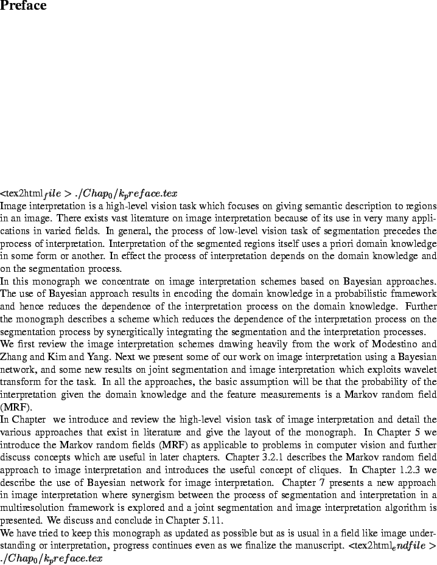

Image interpretation is a high-level description of the environment from which the image was taken. It is essentially an analysis problem where we try to understand the image by identifying some important features or objects in the image and analyze them depending on their spatial relationship. Figure 1.3 shows the task of image interpretation.
Image interpretation is a high-level description of the environment from which the image was taken. It is essentially an analysis problem where we try to understand the image by identifying some important features or objects and analyze them depending on their spatial relationship. Interpretation must be in the form that is suitable for planning such diverse activities as robot arm and hand motion, obstacle avoidance by vehicle, aircraft navigation, remote sensing or in biomedical applications. Image interpretation is knowledge based processing, which requires the use of both low-level processing (image processing techniques of contrast enhancement, computer vision techniques of segmentation, feature extraction, region labelling) and high-level vision tasks involving processing a great amount of non-image related knowledge underlying the scene representation, for example, knowledge about the world physical constraints influencing entities [1]. At low-level the basic processing unit being pixel, there is no simple computational transformation that will map arrays of pixels onto stored symbolic concepts represented in the high-level knowledge base. It is generally accepted that many stages of processing must take place for reliable interpretation of a scene.
A typical image interpretation schemeinterpretation, scheme is shown in Figure 1.4(a) and consist of two interpretation, two block blocks
a low-level vision block (segmentation) which segments the observed 2D image and computes various features for each segment. These features (Appendix G gives a list of features that can find use in image interpretation) could be based on gray level of the segment (for example average gray level, texture, etc.) as well as the shape of the segment (perimeter, area, compactness, etc.). The next block (interpretation) is the one which provides the semantic description, namely, interpretation to each segment of the image. This block has as its inputs, the domain knowledge and the various features obtained from the low-level vision block. More recently the trend is to look at the image interpretation scheme as a three schemeinterpretation,three blocks (Figure 1.4(b)) where in addition to segmentation and interpretation blocks we have a knowledge acquisition blockinterpretation,block,knowledge acquisition which updates the domain knowledge base and gets its input from the 2-D scene and the segmentation block.Domain knowledge domain knowledge is what represents a priori information regarding various interpretations. For example, for a road we may have the domain knowledge as: average gray level , standard deviation of gray level , and so on. It is to be noted that the process of acquiring domain knowledge requires a fair amount of work (Appendix H describes one possible methodology to extract useful knowledge): in brief, one needs a set of sample images and on each image one needs to perform manual segmentationsegmentation, manual. Next various features are computed on these segments, and then the domain knowledge would be the average of the feature value of all the segments in all the images having the same interpretation. An alternate way of characterizing the domain knowledge is using the histogram for the features given the interpretation, which is used for the interpretation scheme based on Bayesian networksinterpretation,Bayesian network as seen in Chapter 1.2.3.
Information on acquiring domain knowledge can be obtained from the monograph of Ohta [2] and [3]. In Appendix G we describe a simple procedure to extract domain knowledge corresponding to a human face image.